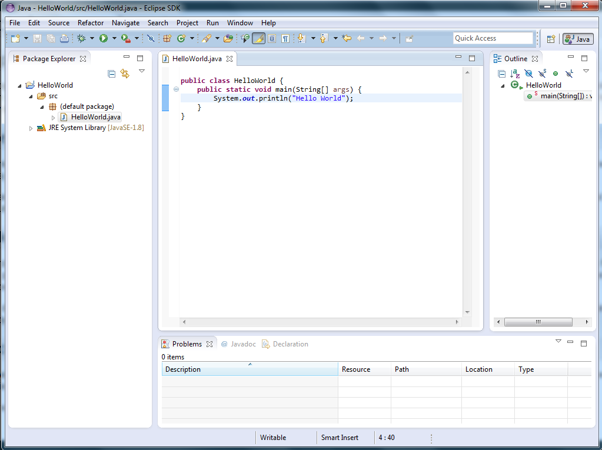

Instalacja i wymagania systemowe¶
System operacyjny¶
Ponieważ programy w języku Java kompilowane są do kodu pośrednioego a następnie uruchamiane na wirtualnej maszynie, to programowanie w tej technologii jest tak samo wygodne na dowolnym systemie operacyjnym. Z racji swojej popularności przykłady będą jednak obrazowane na systemie operacyjnym Windows 7 (identyczne kroki należy podejmować w przypadku systemów Windows XP, czy Windows 8).
Java Development Kit¶
Elementem niezbędnym do kompilowania kodów źródłowych napisanych w języku Java jest zestaw narzędzi o nazwie Java Development Kit. Obecnie obowiązującą wersją konsumencką jest Java 7, jednak dla deweloperów dostępna jest już wersja 8, która wprowadza znaczące usprawnienia i to z niej będziemy korzystali.
Ze strony Oracle należy pobrać najnowszą dostępną wersję JDK w wersji odpowiedniej dla naszego systemu operacyjnego (32 lub 64 bit) oraz zainstalować ją w dowolnym miejscu na swoim komputerze.
Środowisko programistyczne (IDE)¶
Kolejnym narzędziem, które będzie wykorzystywane w trakcie kursu jest środowisko programistyczne eclipse. Na rynku istnieją także inne IDE takie jak Netbeans oraz Intellij IDEA (szczególnie popularne w zastosowaniach komercyjnych), jednak to eclipse jest najpopularniejsze, a jednocześnie proste w obsłudze i z dużymi możliwościami rozbudowy oraz co ważne - całkowicie bezpłatne.
Ponieważ w dalszej częściu kursu będziemy tworzyli aplikacje z graficznym interfejsem użytkownika, zalecamy pobrać wcześniej przygotowane środowisko eclipse wyposażone w niezbędne wtyczki. Całość można pobrać ze strony eFXclipse w postazi archiwum zip, a następnie wypakować je w dowolnym miejscu na komputerze.
JavaFX Scene Builder¶
Rekomendowaną przez firmę Oracle technologią do tworzenia graficznego interfejsu użytkownika (GUI) aplikacji pisanych w Javie jest obecnie JavaFX. Powstało w tym celu narzędzie, które znacznie ułatwia cały proces i pozwala stworzyć interfejs za pomocą przyjaznego mechanizmu drag&drop.
Narzędzie JavaFX Scene Builder w wersji 2.0 można pobrać ze strony Oracle.